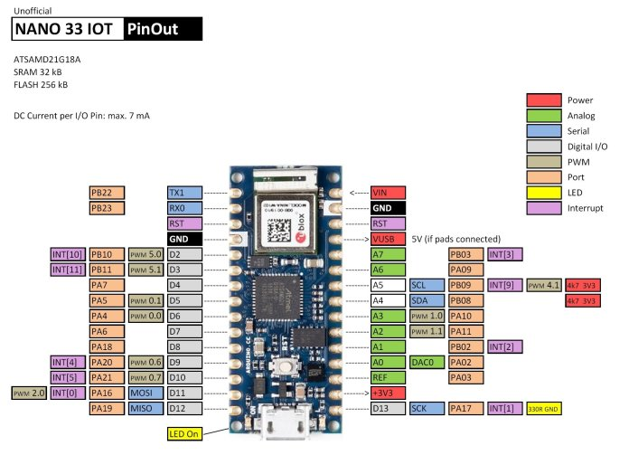
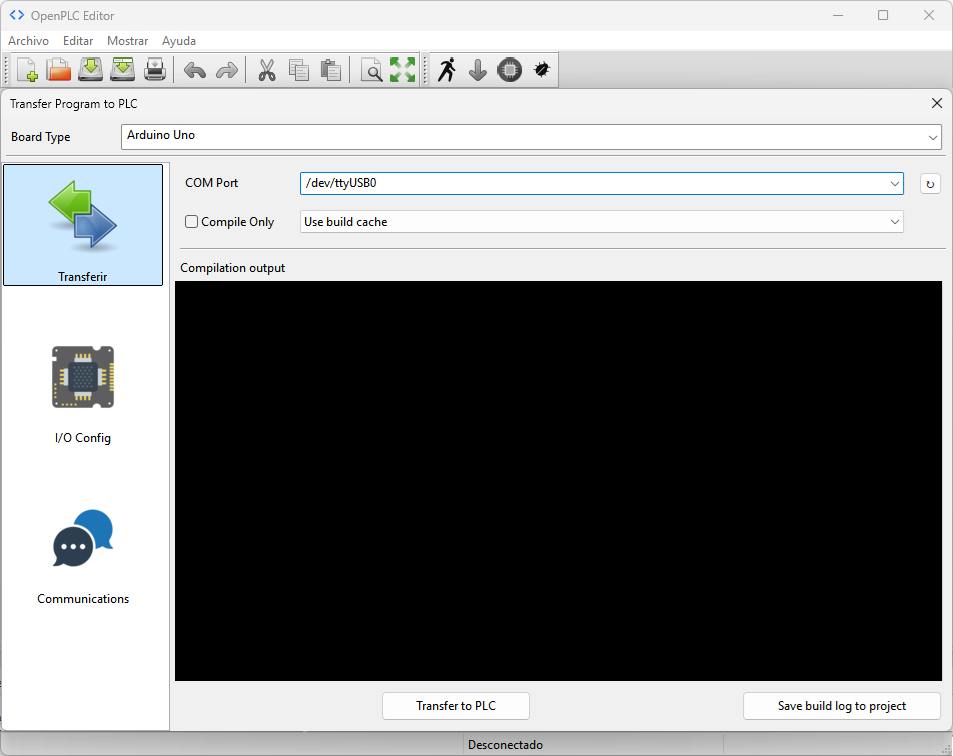

Este módulo integra el dispositivo NodeMCU para obtener una plataforma de desarrollo compatible con OpenPLC, dotada de comunicación WiFi para el desarrollo de aplicaciones IoT.
Antes de comenzar a programar se debe configurar el entorno OpenPLC para poder compilar y cargar los programas adecuadamente en el NodeMCU.
Iniciar OpenPLC y verificar si existen actualizaciones desde el menú Archivo-->Check for updates....

Seleccionar el dispositivo controlador en el menú Board Type y el puerto de comunicación en el menú COM Port.

Mapear los pines correspondientes a las entradas y las salidas del controlador.

Cargar el programa en la placa NodeMCU (verificar que haya seleccionado el puerto correspondiente).
Esperar a que el programa indique que el sketch ha sido subido a la placa NodeMCU.